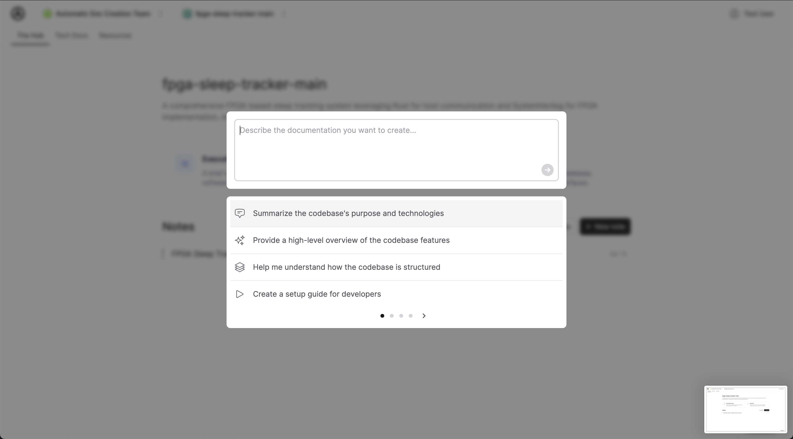
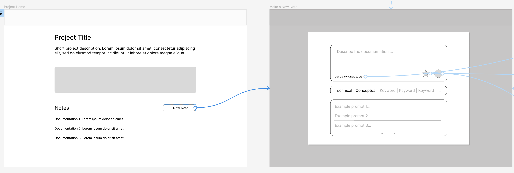
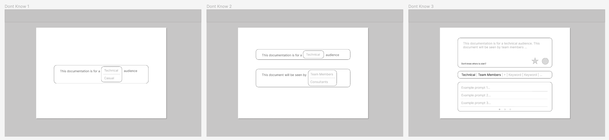
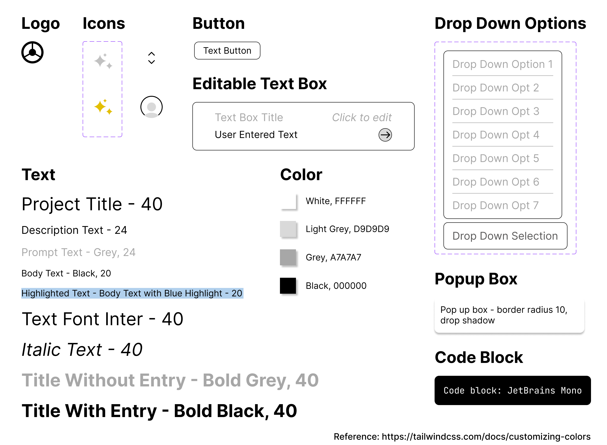
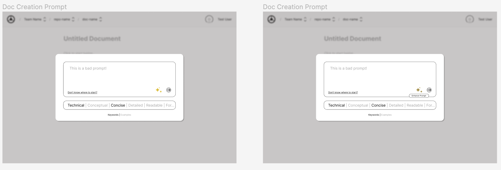

Driver AI uses gen-AI technology to create technical documentation in real-time. The challenge is how to guide users to interact with the AI agent using prompts.
Driver AI uses gen-AI technology to create technical documentation in real-time. The challenge is how to guide users to interact with the AI agent using prompts.
Why This Initiative
Although generative AI has brought disruptive value to various fields, a common problem is that most users are not familiar with how to interact with generative AI models. Giving commands through language prompts is very different from traditional GUIs, and prompt engineering can lead to vastly different outcomes. Driver AI's product also faces this challenge. My team, including Bumjin and Runfeng, aims to modify Driver AI's existing UIUX to address this issue.
Design and Iteration
Our initial design involved sketches and low-fidelity prototypes, emphasizing ease of use. We integrated features like a "Don't know where to start?" button and keyword options to help users in writing effective prompts. Each iteration refined these tools based on feedback from our instructors and the engineering lead at Driver AI, enhancing clarity and usability.
 High-Fidelity Prototyping
The final phase involved creating a high-fidelity prototype with a polished visual style. This version incorporated minor improvements, further simplifying prompt enhancement and document editing processes.
 * Due to confidentiality reasons, more design details cannot be disclosed publicly.
Conclusion
Our design successfully met the needs of our client, Driver AI. They were pleased with our work and plan to implement revisions based on it.
This experience underscored the value of iterative design and user feedback in creating practical, user-centric solutions.
To experience the site firsthand, visit the official site of Driver AI here.